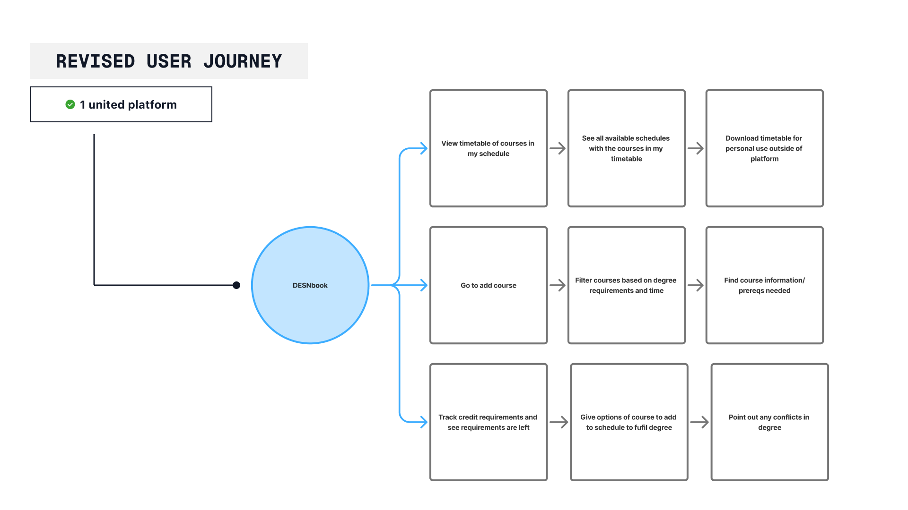
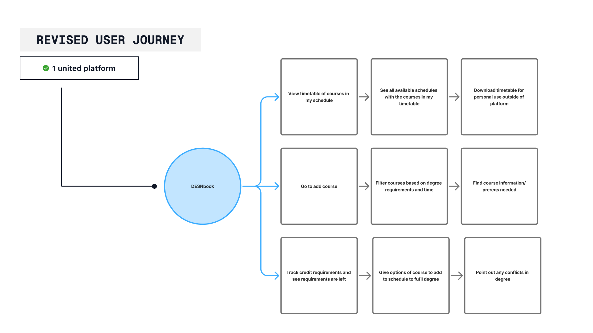

Wiz Parser
Creating a design system for software engineers for Wiz Parser an education module with AI support
Timeline:
1 week
Tools & Skills:
Figma
User Research
User Testing
JSON file systems
overview
During my time at WizRobotics, I was assigned to work with an front-end developer on a platform to help redesign their platform for Wiz Parser, an online interactive teaching platform.
The current developer I was working with had no system in place for designing the different modules for the Wiz Parser, "designing" the modules as they were needed.
Problems
Lack of unity creates confusion
Due to not having a system for creating the elements in the Wiz Parser, the platform lacks consistency both in looks and interactivity. Not only did this look visually unappealing, but it created confusion on the end points for each module, creating no distinction between a marked vs unmarked module.
Creating elements from scratch is time consuming
Competitor Analysis
I analysed the three most common tools design students use to plan out their degree- Visual Student Planner, DESN requirements sheet, and digital planners like Notion- and found their ability to complete tasks design students require to plan their degree.

Each platform had only one or two strong features, forcing students to use multiple platforms to meet their needs. This reinforces frustrations noted in user surveys, highlighting that the main issue with course selection is this split-up user experiences
Problem
Inconsistent, divided platforms
The DESN Program is a 120-credit program requiring students to plan their courses according to requirements. However, there doesn't exist no system to plan out the degree, requiring students to refer to multiple sources to confirm their degree. This fragmented approach can lead to miscommunication and cause human error in meeting degree requirements.
Solution
One dashboard, for all your course planning needs
A live digital planner that tracks DESN requirements, allowing students to manage course planning, view potential schedules, and address any issues in one place.
process
Re-evaluating the User Journey
Based on the pain points of the current systems in place, I drew the current user flow based on the student testimonials I gathered to understand where the issues stem from.
 

user testing
Mid-Fidelity
Based on my research, I developed a mid-fidelity prototype of a dashboard that met the revised user journey, allowing for access to all the major flows from the home dashboard.

The current flow is spread throughout multiple platforms, requiring users to frequently switch between them. To fix this, I created a flow that combines these categories into a single, cohesive experience, allowing users to transition between flows on one platform easily.
Observations
Since I wanted to test a wide scope of features to improve the work, I gave my mid-fidelity to 3 design students who hadn't used the app, and asked them to :
- Add a course to their year one schedule
- Check what credits they need completed
- Make a timetable for a year.
Since these three flows were the most important to design students, my focus was to make these flows as simple and intuitive as possible.
Fixes
Course Card Design
User testing highlighted that the information on the course cards was not intuitive and lacked necessary information, such as when the course was being offered. Based on this feedback, I created a final version with better-organised cards and a labelling system to specify if courses fit certain requirements.

Suggestion Side Bar
Users expressed a desire for the sidebar to be more useful. Early versions displayed only credit information without suggestions for improvements or additional courses. Suggested changes were implemented to help users easily identify and resolve issues with a click.

Final product
Easily look at course desrciption,and add prequiste for courses as well.
Filter and see all possible schedules for your courses.
Easily fix quick issues at the press of a button.
next steps
Connection to existing platforms
Since people, thre would be no immediate roll over to the platform, so adding a function where changes in the could sync up would also imporve productivity. By allowing DESbook to be the hub of descions, it would futher speed up course planning time fore students, and avoid human err when consulting other course resources.
Takeaways
Don't reinvent the wheel
My early designs were focused on creating something that looked nice before consider how the user would use it. By focusing on the issues of users journey and allowing feedback from students on my designs, the ending product allowed for an experience catered toward those who would use it.